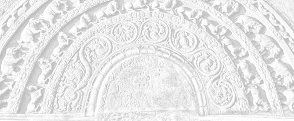

Sermon 6
Namo tassa bhagavato arahato sammāsambuddhassa
Namo tassa bhagavato arahato sammāsambuddhassa
Namo tassa bhagavato arahato sammāsambuddhassaEtaṁ santaṁ, etaṁ paṇītaṁ,
yadidaṁ sabbasaṅkhārasamatho sabbūpadhipaṭinissaggo
taṇhakkhayo virāgo nirodho nibbānaṁ.1“This is peaceful, this is excellent,
namely the stilling of all preparations, the relinquishment of all assets,
the destruction of craving, detachment, cessation, extinction.”
With the permission of the Most Venerable Great Preceptor and the assembly of the venerable meditative monks.
In our last sermon, we happened to discuss how the concept of existence built up with the help of ignorance and influxes, comes to cease with the cessation of ignorance and influxes.2 We explained it by means of similes and illustrations, based on the film show and the drama. As the starting point, we took up the simile of the picture called caraṇa, which the Buddha had made use of in the Gaddulasutta of the Saṁyutta Nikāya.3 With reference to a picture called caraṇa, popular in contemporary India, the Buddha has declared that the mind is more picturesque than that caraṇa picture. As an adaptation of that caraṇa picture for the modern day, we referred to the movie film and the drama in connection with our discussion of saṅkhāras in particular and paṭicca samuppāda in general. Today, let us try to move a little forward in the same direction.
In the latter part of the same Second Gaddulasutta of the Saṁyutta Nikāya, Khandhasaṁyutta, the Buddha gives a simile of a painter.4 Translated it would read as follows:
Just as a dyer or a painter would fashion the likeness of a woman or of a man, complete in all its major and minor parts, on a well planed board, or a wall, or on a strip of cloth, with dye or lac or turmeric or indigo or madder, even so the untaught worldling creates, as it were, his own form, feelings, perceptions, preparations, and consciousness.
What the Buddha wants to convey to us by this comparison of the five grasping groups to an artefact done by a painter, is the insubstantiality and the vanity of those five groups. It brings out their compound and made-up nature. This essencelessness and emptiness is more clearly expressed in the Pheṇapiṇḍūpamasutta of the Khandhasaṁyutta. The summary verse at the end of that discourse would suffice for the present:
Pheṇapiṇḍūpamaṁ rūpaṁ,
vedanā bubbuḷūpamā,
marīcikūpamā saññā,
saṅkhārā kadalūpamā,
māyūpamañca viññāṇaṁ,
dīpitādiccabandhunā.5
It says that the Buddha, the kinsman of the sun, has compared form to a mass of foam, feeling to a water bubble, perception to a mirage, preparations to a banana trunk, and consciousness to a magic show. These five similes bring out the insubstantiality of the five grasping groups. Their simulating and deceptive nature is indicated by the similes. Not only the magic show, but even the other similes, like the mass of foam, are suggestive of simulation, in giving a false notion of compactness. They all convey the idea of insubstantiality and deceptiveness. Consciousness in particular, is described in that context as a conjurer’s trick.
In the course of our discussion we happened to touch upon the significance of saṅkhāras, or preparations. As far as their relevance to films and dramas is concerned, they impart an appearance of reality to ‘parts’ and ‘acts’ which make up a film or a drama. Realism, in the context of art and drama, amounts to an apparent reality. It connotes the skill in deceiving the audience. It is, in fact, only a show of reality. The successful drama is one that effectively hoodwinks an audience. So realism, in that context, means appearing as real. It therefore has a nuance of deception.
Now what supports this deceptive and delusive quality of preparations is ignorance. All this ‘acting’ that is going on in the world is kept up by ignorance, which provides the background for it. Just as, in a drama, such preparations as change of dress, make-up contrivances, character portrayal, and stage-craft, create an atmosphere of delusion, so also are the saṅkhāras, or preparations, instrumental in building up these five grasping groups. So all this goes to show that the term saṇkhāra has the sense of preparing or producing. The realistic appearance of a film or a drama is capable of creating a delusion in an audience. Similarly, the apparent reality of the animate and inanimate objects in the world, creates delusion in the worldlings.
Now to hark back to two lines of a verse we had quoted earlier:
mohasambandhano loko, bhabbarūpo va dissati,6
the world appears as real to one who is fettered to delusion.
This means that the world has an apparent reality, that it merely gives the impression of something real to one who is deluded. It is clear, therefore, that saṅkhāras are responsible for some sort of preparation or concoction. What serves as the background for it, is the darkness of ignorance. This preparation, this concoction goes on, behind the veil of ignorance.
We come across a discourse in the Saṁyutta Nikāya, in which this primary sense of preparation in the word saṅkhāra is explicitly stated, namely the Khajjanīyasutta. In that discourse, each of the five grasping groups is defined, and the term saṅkhāra is defined as follows:
Kiñca, bhikkhave, saṅkhāre vadetha? ’Saṅkhatam abhisaṅkharontī’ti kho, bhikkhave, tasmā ’saṅkhārā’ti vuccanti. Kiñca saṅkhatam abhisaṅkharonti? Rūpaṁ rūpattāya saṅkhatam abhisaṅkharonti, vedanaṁ vedanattāya saṅkhatam abhisaṅkharonti, saññaṁ saññattāya saṅkhatam abhisaṅkharonti, saṅkhāre saṅkhārattāya saṅkhatam abhisaṅkharonti, viññāṇaṁ viññāṇattāya saṅkhatam abhisaṅkharonti. ’Saṅkhatam abhisaṅkharontī’ti kho, bhikkhave, tasmā ’saṅkhārā’ti vuccanti.7
And what, monks, would you say are ‘preparations’? They prepare the prepared – that, monks, is why they are called preparations. And what is the prepared that they prepare? They prepare, as a prepared, form into the state of form, they prepare, as a prepared, feeling into the state of feeling, they prepare, as a prepared, perception into the state of perception, they prepare, as a prepared, preparations into the state of preparations, they prepare, as a prepared, consciousness into the state of consciousness. They prepare the prepared, so, that is why, monks, they are called preparations.
This explains why saṅkhāras are so called. That is to say, the sense in which they are called saṅkhāras. They prepare the prepared, saṅkhata, into that state. And the prepared is form, feeling, perception, preparations, and consciousness. Saṅkhāras are therefore instrumental in building up each of these grasping groups. The most intriguing statement is that even the saṅkhāras are built up by saṅkhāras. They play the part of preparing a sort of make-believe activity. In this sense it is associated with the idea of intention, as being produced by intention.
The two terms abhisaṅkhataṁ abhisañcetayitaṁ are often found in juxtaposition, as if they are synonymous.8 Abhisaṅkhata means ‘specially prepared’, and abhisañcetayitaṁ means ‘thought out’ or ‘intended’. Here we see the relationship of saṅkhāras to intention.
The preparation is done by means of intentions. The two words ceteti pakappeti are also found used together.9 Intention and imagination play their part in this matter of preparation. So in the last analysis, it is something constructed by imagination. All of these five groups are thought-constructs. As suggested by the similes of the picture and the painter, these five groups, in the final reckoning, turn out to be the products of imagination.
As far as the nature of these preparations is concerned, there are these three kinds of preparations mentioned in the Dhamma, namely kāyasaṅkhāra, vacīsaṅkhāra, and manosaṅkhāra, bodily preparations, verbal preparations, and mental preparations.10 These terms have to do with merit and demerit. They are cited in connection with kamma, implying that beings accumulate kamma by means of body, word and mind.
What supports this heaping up of preparations is ignorance. Ignorance provides the background, as in the case of the drama and the movie. This relationship between ignorance and preparations is clearly brought out in the Cetanāsutta of the Sañcetaniyavagga of the Aṅguttara Nikāya.11
According to that sutta, the world attributes an activity to something by regarding it as a unit – by perceiving it as a compact unit. In other words, it is the way of the world to superimpose the concept of a unit or self-agency to wherever there appears to be some sort of activity. As we mentioned in connection with the simile of the whirlpool, viewed from a distance, the whirlpool appears as a centre or a base.12 In the same way, wherever there appears to be some form of activity, we tend to bring in the concept of a unit.
Now it is this very ignorance, this ‘ignoring’, that becomes the seed-bed for preparations. The basic presumption of this ignorance is that preparations must originate from a unitary centre. And the Buddha also points out, in the Cetanāsutta of the Sañcetaniyavagga, that the root cause of bodily, verbal, and mental preparations, is ignorance. Since the discourse is rather lengthy, we propose to analyse it in three sections, for facility of understanding.
Kāye vā, bhikkhave, sati kāyasañcetanāhetu uppajjati ajjhattaṁ sukhadukkhaṁ. Vācāya vā, bhikkhave, sati vācīsañcetanāhetu uppajjati ajjhattaṁ sukhadukkhaṁ. Mane vā, bhikkhave, sati manosañcetanāhetu uppajjati ajjhattaṁ sukhadukkhaṁ avijjāpaccayā va.13
Monks, when the body is there, due to bodily intention, there arises inward pleasure and pain. Monks, when speech is there, due to verbal intention, there arises inward pleasure and pain. Monks, when mind is there, due to mental intention, there arises inward pleasure and pain, all conditioned by ignorance.
Now let us take this as the first section and try to get at its meaning. Given the concept of a body, due to intentions based on that concept of a body, there arises inwardly pleasure and pain. That is, when one imagines that there is a body, due to thoughts which take body as their object, one experiences pleasure and pain. What is called ‘the body’, is a huge mass of activity, something like a big workshop or a factory.
But because of ignorance, if one takes it as one thing, that is as a unit, then there is room for bodily intention to come in. One can objectify the body and arouse thoughts of the body. Thereby one experiences pleasure and pain. This is the implication of the above statement.
Similarly, in the case of speech, it may be said that language is a conglomeration of letters and words. But when speech is taken as a real unit, one can form intentions about speech and inwardly experience pleasure and pain. So also in the case of the mind. It is not an entity by itself, like a soul, as postulated by other religions. It is again only a heap of thoughts. But if one grants that there is a mind, due to that very presumption, one experiences inwardly pleasure and pain with mind as its object. The concluding phrase of that paragraph is particularly significant. It says that all this is conditioned by ignorance.
Let us now take up the second part:
Sāmaṁ vā taṁ, bhikkhave, kāyasaṅkhāraṁ abhisaṅkharoti, yaṁ paccayāssa taṁ uppajjati ajjhattaṁ sukhadukkhaṁ. Pare vāssa taṁ, bhikkhave, kāyasaṅkhāraṁ abhisaṅkharonti, yaṁ paccayāssa taṁ uppajjati ajjhattaṁ sukhadukkhaṁ. Sampajāno vā taṁ, bhikkhave, kāyasaṅkhāraṁ abhisaṅkharoti, yaṁ paccayāssa taṁ uppajjati ajjhattaṁ sukhadukkhaṁ. Asampajāno vā taṁ, bhikkhave, kāyasaṅkhāraṁ abhisaṅkharoti, yaṁ paccayāssa taṁ uppajjati ajjhattaṁ sukhadukkhaṁ.
Either he himself prepares that bodily preparation, owing to which there would be that inward pleasure and pain. Or else others prepare for him that bodily preparation, owing to which there would be for him inward pleasure and pain. Either he, being fully aware, prepares that bodily preparation, owing to which there would be for him inward pleasure and pain. Or else he, being fully unaware, prepares that bodily preparation, owing to which there would be for him that inward pleasure and pain.
The substance of this paragraph seems to be that one by oneself prepares the bodily preparation that brings one pleasure or pain inwardly and that others also prepare for him such a bodily preparation. It is also said that the bodily preparation can occur either with or without awareness. About the verbal and mental preparations too, a similar specification is made. This is the summary of the second section.
The third and final section is the most significant:
Imesu, bhikkhave, dhammesu avijjā anupatitā. Avijjāya tveva asesavirāganirodhā so kāyo na hoti yaṁ paccayāssa taṁ uppajjati ajjhattaṁ sukhadukkhaṁ, sā vācā na hoti yaṁ paccayāssa taṁ uppajjati ajjhattaṁ sukhadukkhaṁ, so mano na hoti yaṁ paccayāssa taṁ uppajjati ajjhattaṁ sukhadukkhaṁ, khettaṁ taṁ na hoti, vatthum taṁ na hoti, āyatanaṁ taṁ na hoti, adhikaraṇaṁ taṁ na hoti, yaṁ paccayāssa taṁ uppajjati ajjhattaṁ sukhadukkhaṁ.
Monks, in all these cases, ignorance hangs on. But with the remainderless fading away and cessation of ignorance, that body is not there, owing to which there can arise for him inward pleasure or pain, that speech is not there, owing to which there can arise for him inward pleasure and pain, that mind is not there, owing to which there can arise for him inward pleasure and pain. That field is not there, that site is not there, that base is not there, that reason is not there, owing to which there can arise for him inward pleasure or pain.
Since all the instances mentioned earlier are accompanied by ignorance, the utter fading away and cessation of that very ignorance prevents, as it were, the crystallization of that body, speech, and mind, due to which inward pleasure and pain can arise. In other words, it removes the field, the ground, the base and the provenance for the arising of inward pleasure and pain.
This shows that, once the existence of a body is granted, with that concept of a body as its object, bodily preparations come to be built up. Or, in other words, given the concept of a body, and due to bodily intention, that is by treating it as a real unit, one experiences inwardly pleasure and pain because of thoughts concerning the body.
So also in regard to speech and mind. It is emphatically stated that all this occurs because of ignorance. What confers on them all the status of a unit, through the perception of the compact, is this very ignorance. As for the second paragraph, what it says is simply that those bodily preparations and the like can be made by oneself as well as by others, and that too either being aware or unaware.
Now all these are related to ignorance. Therefore, at whatever point of time this ignorance ceases completely in someone, then for him there is no consciousness of a body, though from an outside point of view he appears to have a body. He may use words, he may speak, but for him there is nothing substantial in linguistic usage. He seems to be making use of a mind, mind-objects also come up, but he does not regard it as a unit. Therefore, inwardly, no pleasures and pains come up.
With the cessation of ignorance comes the cessation of preparations. Thereby all pleasures and pains cease. This, in other words, is the state of Nibbāna. It appears, then, that this discourse gives us a clue to the state of Nibbāna. It says something about bodily, verbal, and mental preparations.
If we try to understand its message in relation to the analogy of the film show and the drama, mentioned earlier, we may offer the following explanation: Now in the case of a film show or a drama, the preparations remain as preparations so long as there is that darkness of ignorance. The realism or the realistic appearance of the acting of actors and actresses, or the roles and guises they assume in dress and speech, depends on the veil of ignorance that conceals their true nature.
Similarly, here too, the implication is that it is ignorance which invests these preparations with the realistic appearance. If at any point of time that ignorance happens to cease, then there will be no pleasure or displeasure for the audience, however much make-up and pretension there is.
It is such a situation of non-enjoyment that we happened to mention in the previous sermon with reference to the witnessing of a hill-top festival by Upatissa and Kolita.14 They had a flash of insight due to the light of wisdom that came from within, not due to any illumination from outside. Because of it, those preparations ceased to be preparations. From this we can understand that the term saṅkhāra becomes meaningful only against the background of ignorance.
To move a step further, it is against the background of both ignorance and preparations that all the subsequent links in the formula become meaningful. As far as the interrelation between consciousness and name-and-form is concerned, all what we have said above regarding the reflection of name-and-form on consciousness,15 becomes meaningful only so long as the reality of preparations is granted, that is, only so far as their deceptive nature is maintained. But that deceptive nature owes its existence to ignorance. This way we can unravel one aspect of the essential significance of the term saṅkhāra.
Then there is another point worth considering in this respect. Saṅkhāra as the second link in the paṭicca samuppāda formula is defined by the Buddha in the Vibhaṅgasutta in the Nidānasaṁyutta not in terms of kāyasaṅkhāra, vacīsaṅkhāra, and manosaṅkhāra, but as kāyasaṅkhāro, vacīsaṅkhāro, and cittasaṅkhāro. This might seem rather intriguing.
Katame ca, bhikkhave, saṅkhārā? Tayome, bhikkhave, saṅkhārā – kāyasaṅkhāro, vacīsaṅkhāro, cittasaṅkhāro.16
What, monks, are preparations? Monks, there are these three preparations – body-preparation, speech-preparation, and mind-preparation.
Also, it is noteworthy that here the term is given in the singular. In the majority of instances it is found in the plural number, but here in the definition of the term the singular is used as kāyasaṅkhāro, vacīsaṅkhāro, and cittasaṅkhāro.
The significance of this usage is explained for us by the Cūḷavedallasutta, in the Dhamma discussion between the arahant nun Dhammadinnā and the lay disciple Visākha. There the venerable Therī, in answer to a question raised by the lay disciple, comes out with a definition of these three terms:
Assāsapassāsā kho, āvuso Visākha, kāyikā, ete dhammā kāyappaṭibaddhā, tasmā assāsapassāsā kāyasaṅkhāro.17
Friend Visākha, in-breaths and out-breaths are bodily, these things are bound up with the body, that is why in-breaths and out-breaths are a body-preparation.
According to this interpretation, in-breathing and out-breathing are a body-preparation in the sense that their activity is connected with the body. There is no explicit mention of karma here.
Then the definition of vacīsaṅkhāro is as follows:
Pubbe kho, āvuso Visākha, vitakketvā vicāretvā pacchā vācaṁ bhindati, tasmā vitakkavicārā vacīsaṅkhāro.
Friend Visākha, first having thought and pondered one breaks into speech, that is why thinking and pondering are a speech-preparation.
Here vacīsaṅkhāra is defined as thinking and pondering, not in terms of karma such as abusive speech and the like.
Then, as the third, cittasaṅkhāro is given the following definition:
Saññā ca vedanā ca cetasikā ete dhammā cittappaṭibaddhā, tasmā saññā ca vedanā ca cittasaṅkhāro.
Perception and feeling are mental, they are bound up with the mind, that is why perception and feeling are a mind-preparation.
Perception and feeling are called a mind-preparation because they are mental and have to do with the mind.
According to this definition it appears, then, that what the Buddha had indicated as the second link of the formula of dependent arising, is in-breathing and out-breathing, thinking and pondering, and perception and feeling. The mode of interpretation, we have adopted, shows us that the word saṅkhāra, in the context of a drama, for instance, can mean preparations or some sort of preliminary arrangement or fashioning.
Now this sense of preparation is applicable to in-breaths and out-breaths too. As we know, in all our bodily activities, particularly in lifting some weight and the like, or when exerting ourselves, we sometimes take a deep breath, almost impulsively. That is to say, the most basic activity of this body is in-breathing and out-breathing.
Moreover, in the definition of vacīsaṅkhāro it is clearly stated that one speaks out having first thought out and pondered. This is a clear instance of the role of saṅkhāra as a ‘preparation’ or a preliminary activity. Now the word ‘rehearsal’ is in common use in the society. Sometimes, the day before a drama is staged for the society, a sort of trial performance is held. Similarly, before breaking out into speech, one thinks and ponders. That is why sometimes we find words issuing out before we can be aware of it. Thinking and pondering is called vacīsaṅkhāro, because they ‘prepare’ speech. The sense of ‘preparation’ is therefore quite apt.
Then there is perception and feeling, for which the term cittasaṅkhāro is used here, instead of manosaṅkhāra. The reason for it is that what we reckon as manosaṅkhāra is actually the more prominent level represented by intentions and the like. The background for those intentions, the subliminal preparatory stage, is to be found in perception and feeling. It is perception and feeling that give the impetus for the arising of the more prominent stage of intention. They provide the necessary mental condition for doing evil or good deeds. This way, we can get at the subtle nuances of the term saṅkhāra. Just as in the case of an iceberg floating in the ocean, the greater part is submerged and only a fraction of it shows above the surface, so also the deeper nuances of this term are rather imperceptible.
Beneath our heap of body actions, verbal actions, and mental acts of willing or intentions lies a huge mountain of activities. Breathing in and breathing out is the most basic activity in one’s life. It is, in fact, the criterion for judging whether one is alive or dead. For instance, when someone falls in a swoon, we examine him to see whether he is still breathing, whether this basic activity is still there in him. Also, in such a case, we try to see whether he can speak and feel, whether perception and feeling are still there in him. So in this way we can understand how these basic forms of activity decide the criterion for judging whether life is present or extinct in a person.
That activity is something internal. But even at that level, defilements lie dormant, because ignorance is hiding there too. In fact, that is precisely why they are reckoned as saṅkhāra. Usually, one thinks in terms of ‘I’ and ‘mine’, as: ‘I breathe’, ‘I speak’, ‘I see’, and ‘I feel’. So, like the submerged portion of an iceberg, these subtler layers of preparations also have ignorance hidden within them. That is why the attempt of pre-Buddhistic ascetics to solve this saṁsāric riddle by tranquillity alone met with failure.
Pre-Buddhistic ascetics, and even Ālāra Kālāma and Uddaka Rāmaputta, thought that they can get out of this saṁsāra by tranquillizing the bodily activities, the verbal activities, and the mental activities. But they did not understand that all these are saṅkhāras, or preparations, therefore they were confronted with a certain dilemma. They went on calming down the bodily activities to subtler and subtler levels. They calmed down the in-breaths and out-breaths, they managed to suppress thinking and pondering by concentration exercises, but without proper understanding. It was only a temporary calming down.
However, once they reached the level of neither-perception-nor-non-perception, they had to face a certain problem. In fact, the very designation of that level of attainment betrays the dilemma they were in. It means that one is at a loss to say definitely whether there is some perception or not. The Pañcattayasutta clearly reveals this fact. It gives expression to the problem facing those ascetics in the following significant statement:
Saññā rogo saññā gaṇḍo saññā sallaṁ, asaññā sammoho, etaṁ santaṁ etaṁ paṇītaṁ yadidaṁ nevasaññānāsaññaṁ.18
Perception is a disease, perception is a boil, perception is a dart, but not to have perception is to be deluded, this is peaceful, this is excellent, that is, neither-perception-nor-non-perception.
They understood to some extent that this perception is a disease, a trouble, a tumour, or a wound, or else a thorn, they wanted to be free from perception. But then, on the other hand, they feared that to be totally free from perception is to be in a deluded state. Therefore they concluded: “This is peaceful, this is excellent, that is neither-perception-nor-non-perception”, and came to a halt there. That is why the Buddha rejected even Ālāra Kālāma and Uddaka Rāmaputta and went in search of the stilling of all preparations.
So the kind of tranquillity meditation followed by the pre-Buddhistic ascetics, through various higher knowledges and meditative attainments, could never bring about a stilling of all preparations. Why? Because the ignorance underlying those preparations were not discernible to their level of wisdom. In the least, they could not even recognize their saṅkhāra nature. They thought that these are only states of a soul. Therefore, like the present day Hindu Yogins following the philosophy of the Upaniśads, they thought that breathing is just one layer of the self, it is one of the outer rinds of the soul.
In fact, the ‘kernel’ of self was supposed to have around it the four rinds, annamaya, prāṇamaya, saṁjñamaya, and vijñāṇamaya. That is to say, made out of food, breath, perception, and consciousness, respectively. Apart from treating them as states of a self, they were not able to understand that all these activities are saṅkhāras and that ignorance is the spring-board for them.
In view of the fact that Nibbāna is called the stilling of all preparations, sabbasaṅkhārasamatha, one might sometimes conclude that the attainment of the cessation of perceptions and feeling, saññāvedayitanirodha, is in itself Nibbāna. But it is on rising from that attainment, which is like a deep freeze, that one makes contact with the three deliverances, the signless, animitta, the desireless, appaṇihita, and the void, suññata.
According to the Buddhist outlook, it is wisdom that decides the issue, and not tranquillity. Therefore, in the last analysis, preparations cease to be preparations when the tendency to grasp the sign in the preparations is got rid of and signlessness is experienced. The ‘sign’ stands for the notion of permanence and it accounts for the deceptive nature of preparations, as in the case of an actor’s make-up and stage-craft. It is the sign of permanence that leads to a desire for something, to expectations and aspirations.
So that sign has to leave together with the desire, for the Desireless Deliverance to come about. Then one has to see all this as essenceless and void. It is just because of desire that we regard something as ‘essence-tial’. We ask for the purpose of something, when we have desire. Now it is through this unique vision of the Signless, the Desireless, and the Void, that the Buddha arrived at the state of stilling of all preparations.
We resort to the simile of the film show and the drama not out of disregard for the precept concerning abstention from such diversions, but because the Buddha has called dancing a form of mad behaviour.
Ummattakam idaṁ, bhikkhave, ariyassa vinaye yadidaṁ naccaṁ.19
This, monks, is a form of madness according to the noble one’s discipline, namely dancing.
Now what is the nature of a madman? He is jumpy. From the standpoint of Dhamma, dancing is a form of jumpiness. In fact, all preparations are that. It shows a nervous stress as well as a nervous release. It is an endless series of winding and unwinding.
What makes this problem of saṁsāra such a knotty one to solve? We go on heaping up karmic actions, but when the time comes to experience their consequences, we do not regard them as mere results of karma, but superimpose an ‘I’ on that experience. So we act with the notion of an ‘I’ and react to the consequences again with the notion of an ‘I’. Because of that egoistic reaction, we heap up fresh karma. So here is a case of stress and release, of winding and rewinding.
This is like a tangled skein. Sometimes, when an unskilled person tries to disentangle a tangled skein while disentangling one end, the other end gets entangled. So it is, in the case of this saṁsāric ball of thread. While doing a karma, one is conscious of it as “I am doing it”. And when it is the turn to suffer for it, one does not think it as a result of that karma. Consequently one accumulates fresh karma through various attachments and conflicts arising out of it. Here too we see some sort of a drama.
Now if one can get the opportunity to see either a rehearsal or the back-stage preparations for a drama, which however is not usually accessible to the public, one would be able to see through the drama. If one can steal a peep into the back-stage make-up contrivances of actors and actresses, one would see how ugly persons can become comely and the wretched can appear regal. One would then see what a ‘poor show’ it is.
In the same way there is something dramatic in these basic preparations, namely – in-breathing and out-breathing, thinking and pondering, perception and feeling. If one sees these back-stage preparations with wisdom, one would be disenchanted. What tranquillity meditation does, is to temporarily calm them down and derive some sort of happiness. That too is necessary from the point of view of concentration, to do away with restlessness and the like, but it does not dispel ignorance. That is why, in insight meditation, one tries to understand preparations for what they are by dispelling ignorance.
The more one sees preparations as preparations, ignorance is dispelled, and the more one dispels ignorance, the preparations lose their significance as preparations. Then one sees the nature of preparations with wisdom as signless, desireless, and void. So much so that, in effect, preparations cease to be preparations.
This is something of a marvel. If we now hark back to the two words ‘winding’ and ‘rewinding’, the entire world, or saṁsāric existence in its entirety, is a process of winding and rewinding. Where the winding ends and the rewinding begins is a matter beyond our comprehension. But one thing is clear – all these comes to cease when craving and grasping are abandoned. It is towards such an objective that our minds turn by recognizing preparations for what they are, as a result of a deeper analysis of their nature.
The relation of saṅkhāras to ignorance is somewhat similar to the relation a drama has to its back-stage preparations. It seems, then, that from the standpoint of Dhamma the entire saṁsāra is a product of specifically prepared intentions, even like the drama with its back-stage preparations.
Let us return to the simile of the cinema again. The average man, when he says that he has seen a film show, what he has actually seen is just one scene flashing on the screen at a time. As we happened to mention in an earlier sermon, people go to the cinema and to the theatre saying:
“We are going to see a film show, we are going to see a drama”.20 And they return saying: “We have seen a film show, we have seen a drama”. But actually, they have neither seen a film nor a drama completely.
What really has happened? How did they see a film show? Just as much as one creates a name-and-form on one’s screen of consciousness with the help of preparations, the film-goer has created a story by putting together the series of scenes falling on the screen.
What we mean to say is this: Now supposing the series of consecutive frames, which make up a motion picture, is made to appear on the scene when there is no spectator in the cinema hall – will there be a film at all? While such an experiment is going on, if a film-goer steps in late, half way through, he would not be able to gather that portion of the film already gone. It is gone, gone, gone forever. Those preparations are irrevocably past.
A film show actually becomes a film show thanks to that glue used by the audience – the glue of craving. The Buddha has preached that this craving has three characteristics, namely: ponobhavika, nandirāgasahagata, and tatratatrābhinandi.21
Ponobhavika as a characteristic of craving means, in its broader sense, that it leads to re-becoming. One might think that by ‘re-becoming’ only the connecting up of one existence in saṁsāra with another is meant. But that is not all. It is craving that connects up one moment of existence with another.
One who is seeing a film show, for instance, connects up the first scene with the second, in order to understand the latter. And that is how one ‘sees’ a film show and comes back and says: “I have seen a film show”. All the scenes do not fall on the screen at once, but a connecting-up goes on. That is the idea behind the term ponobhavika. In this connecting up of one scene with another there is an element of re-becoming or re-generation.
Then there is the term nandirāgasahagata. This is the other additive which should be there for one to enjoy the film show. It means the nature of delighting and getting attached.
Craving in particular is like a glue. In fact, a synonym for it is lepa, which means a ‘glue’.22
Another synonym is visattika, an ‘adhesive’ or a ‘sticky substance’.23
Even the word rāga, or attachment, already conveys this sense. So craving, or desire, glues the scenes together.
Then comes the term tatratatrābhinandi, the nature of delighting, in particular now here, now there. It is, in effect, the association of one scene with another in order to make up a story out of it. That is why we made the statement: “So far not a single cinema has held a film show and not a single theatre has staged a drama”.24
But all the same, those who went to the cinema and the theatre witnessed a show and a drama. How? They produced them, or prepared them, with their ‘sticky’ defilements on their own.
Now in the same way, worldly beings create a film show of name-and-form on the screen of consciousness with the help of preparations, or saṅkhāras. Name-and-form is a product of imagination. What insight meditators often refer to as reflection on ‘name-and-form preparations’, amounts to this. Is there something real in name-and-form? In our very first sermon we happened to say something on this point.25
In the Dvayatānupassanāsutta of the Sutta Nipāta the Buddha gives utterance to the following verse:
Anattani attamāniṁ,
passa lokaṁ sadevakaṁ,
niviṭṭhaṁ nāmarūpasmiṁ,
idaṁ saccan’ti maññati.26Just see the world, with all its gods,
Fancying a self where none exists,
Entrenched in name-and-form it holds
The conceit that this is real.
It is as if the Buddha is pinpointing the illusory and deceptive nature of name-and-form. As we mentioned before, scenes fall on the cinema screen only one at a time. Because of the rapidity of the movie film, it is difficult for one to be aware of this fact.
Now, in the case of a drama, the curtain goes down between acts and the audience waits for the curtain to go up. But they wait, ready with their glue to connect the previous act with the one to come, to construct a drama. By the time a certain scene falls on the cinema screen, the previous one is gone for good. Scenes to follow have not yet come. Whatever scene falls on the screen, now, will not stay there. So what we have here, is something illusory, a deceptive phenomenon.
Let us now consider an instance like this: Sometimes we see a dog, crossing a plank over a stream, stopping half way through to gaze at the water below. It wags its tail, or growls, or keeps on looking at and away from the water, again and again. Why does it do so? Seeing its own image in the water, it imagines that to be another dog. So it either wags its tail in a friendly way, or growls angrily, or else it keeps on stealing glances out of curiosity – love, hate, and delusion.
In this case, the dogs thinks that it is looking because it sees a dog. But what is really happening? It is just because it is looking that it sees a dog. If the dog had not looked down, it would not have seen a dog looking up at it from below, that is to say – its own image.
Now it is precisely this sort of illusion that is going on with regard to this name-and-form, the preparations, and sense-perception. Here lies the secret of Dependent Arising.
As a flash-back to our film show, it may be added that if a film reel is played at a time when there is no spectator, no film show will be registered anywhere, because there is no mind to put together. It merely flashed on the screen. But if someone had been there to receive it, to contact with his sense-bases, that is, to see with his eyes, hear with his ears, and make mental contact with desire, then there comes to be a film show. And so also in the case of a drama.
Film producers and dramatists think that the production of the film and the drama is solely their work. But in the last analysis, it is the audience that gives the film and the drama the finishing touch, to make them finished products. Similarly, we tend to think that every object in the world exists in its own right. But then this is what is called sakkāyadiṭṭhi, the ‘personality view’, which carries with it the self-bias.
It is such a view that made the dog imagine that there is another dog in the water. It imagined that the dog is there, even when it is not looking. It may have thought: “I am looking because a dog appears there”. But the fact is that the dog appears there because it cares to look. Here, then, we have a case of dependent arising, or paṭicca samuppāda.
The word paṭicca has a very deep meaning. The Buddha borrowed many words from the existing philosophical tradition in India. Sometimes he infused new meanings into them and adopted them to his terminology. But the term paṭicca samuppāda is not to be found in any other philosophical system. The special significance of the term lies in the word paṭicca.
On a certain occasion, the Buddha himself gave a definition to this term paṭicca samuppāda. Now it is fairly well known that the Buddha declared that all this suffering is dependently arisen. What then is to be understood by the word dukkha, or ‘suffering’?
He defines it in terms of the five grasping groups, or the five aggregates of clinging, as it is said: saṅkhittena pañcupādānakkhandhā dukkhā,27 “in short, the five grasping groups are suffering”. So then suffering, or the five grasping groups, is something dependently arisen.
In one discourse in the Nidānasaṁyutta of the Saṁyutta Nikāya we find the Buddha making the following significant statement:
Paṭiccasamuppannaṁ kho, Upavāṇa, dukkhaṁ vuttaṁ mayā. Kiṁ paṭicca? Phassaṁ paṭicca.28
Upavāṇa, I have declared that suffering is dependently arisen. Dependent on what? Dependent on contact.
So from this statement, also, it is clear that the five groups of grasping arise because of contact, that is by contacting through the six bases.
Considered in this way, a thing is called dependently arisen because it arises on being touched by the six sense-bases. That is why it is called anicca, or impermanent. The film show, for instance, was not something already made, or ‘ready made’. It arose due to contact. The phrase saṅkhataṁ paṭiccasamuppannaṁ,29 ‘prepared and dependently arisen’, suggests that the prepared nature is also due to that contact. What may be called abhisaṅkhata viññāṇa,30 ‘specifically prepared consciousness’, is that sort of consciousness which gets attached to name-and-form.
When one sees a film show, one interprets a scene appearing on the screen according to one’s likes and dislikes. It becomes a thing of experience for him. Similarly, by imagining a self in name-and-form, consciousness gets attached to it. It is such a consciousness, which is established on name-and-form, that can be called abhisaṅkhata viññāṇa.
Then could there be also a consciousness which does not reflect a name-and-form? Yes, there could be. That is what is known as anidassana viññāṇa,31 or ‘non-manifestative consciousness’. This brings us to an extremely abstruse topic in this Dhamma.
There is a very deep verse occurring at the end of the Kevaḍḍhasutta of the Dīgha Nikāya which has been variously interpreted by scholars both eastern and western. It runs:
Viññāṇaṁ anidassanaṁ,
anantaṁ sabbato pabhaṁ,
ettha āpo ca paṭhavī,
tejo vāyo na gādhati,
ettha dīghañca rassañca,
aṇuṁ thūlaṁ subhāsubhaṁ,
ettha nāmañca rūpañca,
asesaṁ uparujjhati,
viññāṇassa nirodhena,
etth’etaṁ uparujjhati.32
The commentary advances several interpretations to this verse.33 Being unable to give one definite meaning, it suggests several. However, since we have developed a certain mode of interpretation so far, we propose to give preference to it before getting down to the commentarial interpretation. Now let us see whether our mode of interpretation can make this verse meaningful.
First of all, we have to trace the circumstances which provide the setting for this verse in the Kevaḍḍhasutta. The Buddha brings out a past episode, relating to the company of monks. A certain monk conceived the riddle: “Where do these four great primaries, earth, water, fire, and air, cease altogether?” He did not approach the Buddha with his problem, probably because he thought that somewhere in this world-system those four elements could cease.
So what did he do? As he had psychic powers he went from heaven to heaven and Brahma realm to Brahma realm, asking the gods and Brahmas this question: “Where do these four primaries cease?” None among the gods and Brahmas could answer. In the end, Mahā Brahma himself asked him, why he took the trouble to come all the way there, when he could have easily consulted the Buddha. Then that monk approached the Buddha and put the riddle to him.
But before answering the riddle, the Buddha recommended a restatement of it, saying: “Monk, that is not the way you should put it. You should have worded it differently.” Now that means that the question is wrongly put. It is incorrect to ask where the four great primaries cease. There is a particular way of wording it. And this is how the Buddha reformulated that riddle:
Kattha āpo ca paṭhavī,
tejo vāyo na gādhati,
kattha dīghañca rassañca,
aṇuṁ thūlaṁ subhāsubhaṁ,
kattha nāmañca rūpañca,
asesaṁ uparujjhati?Where do earth and water,
Fire and wind no footing find,
Where is it that long and short,
Fine and coarse, pleasant, unpleasant,
As well as name-and-form,
Are held in check in a way complete?
Here the Buddha introduces a phrase of special significance: na gādhati, ‘does not find a footing’. So the question, as restated, means: “Where do the four primaries not get a footing?”
The question, then, is not about a cessation of the four primaries, it is not a question of their cessation somewhere in the world or in the world system. The correct way to put it, is to ask where the four great primaries do not find a footing.
The Buddha adds that it may also be asked where long and short, fine and coarse, pleasant and unpleasant, as well as name-and-form are held in check completely. The word uparujjhati means ‘holding in check’.
Having first reformulated the question, the Buddha gave the answer to it in the verse previously quoted. Let us now try to get at the meaning of this verse. We shall not translate, at the very outset, the first two lines of the verse, viññāṇaṁ anidassanaṁ, anantaṁ sabbato pabhaṁ. These two lines convey a very deep meaning. Therefore, to start with, we shall take the expression as it is, and explain its relation to what follows.
It is in this consciousness, which is qualified by the terms anidassanaṁ, anantaṁ, and sabbato pabhaṁ, that earth, water, fire, and air do not find a footing. Also, it is in this consciousness that long and short, fine and coarse, and pleasant and unpleasant, as well as name-and-form, are kept in check. It is by the cessation of consciousness that all these are held in check.